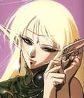

Forums galactiques > Taverne galactique : lieu de discussion informel > Taverne de la luxure
| Kahndann Réputation à la taverne : 116  29/06 ETU 13:13 | Score : 0 Détails Un homme entre dans la taverne, hésitant. Il a l'air tout sauf à l'aise. Vêtu d'une cape sombre et sale, semblant ne s'être pas lavé depuis de nombreux jours.
Cependant l'observateur attentif peut remarquer que sa tunique, bien que sale, semble d'un tissu bien plus résistant que la moyenne, que les gants qu'il porte, sales eux aussi, semble être en soie plus qu'en tissu. Bienvenue à la Taverne de la Luxure... Grognement de l'étranger qui passe sans s'arrêter devant la serveuse, semblant chercher quelque chose. Ou quelqu'un. Vous désirez boire quelque chose ? Secouant la tête, il continue à s'avancer, observant chaque détail de la taverne... Tiens, le personnel n'a pas encore lavé le sol... il ignorait qu'un être vivant contenait autant de sang... Butant dans quelque chose... une dent... Mais où est-il ? Là ! Oui, il est là ! dissimulant un sourire et sortant papier et crayon de sa poche, l'inconnu s'approche d'un cinglé en haillons.... D'un cinglé qui a fait voeu de surdité... | ||
| Seigneur Grimaldus Réputation à la taverne : 806  29/06 ETU 20:46 | Score : 0 Détails "J'aime cette Galaxie...Tout ces gens qui essayent d'être discret..Il devrait d'abord me demander de me taire ou chercher une protection télépathique.."
Regarde fixement un serviteur qui passe.Ce dernier se retourne ,voie le Seigneur.Il se met à trembler,tandis qu'il sent une pression énorme et douloureuse s'exercer sur son estomac. Il s'écroule soudain en poussant des hurlements de douleurs.. "Ahaha!Oui,je l'adore vraiment!! Fou!! J'ai une surprise pour toi!" Deux couples de créatures étranges entrent alors dans la Taverne.un couple d'une espèce d'Hommes-taureaux très massifs.Ils ont chacun un énorme marteau dans le dos. "Ceux-là garderont ta Taverne..Ils crachent des Flammes très impressionnantes par les museaux,soi-dit en passant.." Le Deuxième couple fait son apparition.Il s'agit de créatures informes,gélatineuses comme des pieuvres.Ils possèdent 8 bras. "Ceux-là sont d'excellent serveurs..J'espère qu'ils feront ta joie.." | ||
| Leorique Réputation à la taverne : 387  29/06 ETU 21:31 | Score : 0 Détails Le fou1 (celui qui a fait vœu de surdité … ) regarde avancer l’homme … il sourit légèrement, ha oui … parfait … des clients. Le fou1 savait repérer des clients quand il le voyait et à vrai dire … il n’y avait que ça dans la taverne. Il sourit d’un air de folie sourde (la numero 1) … prêt a ricaner comme un dément mais il se rappelle subitement où il est et … le fou des ombres …. prenant facilement ombrage … il vaux mieux éviter ça.
Il se frotte les mains la mine réjouie, avec l’argent qu’il va accumuler il va pouvoir commencer la phase deux de son commerce en gallinacerie. La gallimorphose … ça va être un superbe spectacle … niark niark … bon … on revient au client, qui entre parenthèse a tout l’air d’un client demandant la perfection. Alors on va lui vendre mon dernier modèle, avec personnalisation, phrase à incorporer directement dans le poussin. (les poussins du premier modèle avaient seulement des messages du style ‘Joyeux noël’, ‘joyeux anniversaire’ et surtout le sublime … l’ultime … ‘Joyeuses paques’ niark niark …). « Hé hé ... bonsoir ... voulez un ... hum ... un ... vous savez bien » dit-il d'un air de conspirateur des plus fous. D’un sourire crispé l’homme s'apprête à ouvrir la bouche puis se reprends et écrit rapidement : « Oui... oui ! » « Hé ! pas si fort ... on pourrais nous entendre ! » murmure le fou1 tout bas. « Vla un de ma dernière .... couvée de mon modèle ... le poussinator : le F O U 1 tiret H 59 P (pas facile a prononcer ;) ) ! ça fera 10 000 leems. » En écrivant nerveusement l’homme répond « Trop cher, pas de preuve de leur efficacité... 5000 pas un leems de plus » « Non non non ... 10 000 c'est déjà peu cher pour se débarrasser de ... gênant » clin d'œil. Brève hésitation de l'homme « Pas sans connaître la qualité de la marchandise... ». « Grumpf ... alors ... 5 000 maintenant 5 000 si ça marche ? et .... je serais au courant si ça marche » ricane d'un rire de fou1. « Si la taverne a encore un toit je vous rembourse ! » L’homme en écrivant maladroitement « Un test... je veux le tester avant... tu vois la serveuse à neuf doigts là bas ? » Le fou1 hausses des épaules. « Moi je vends... je ne pose pas les... gallinacés... je n'ai pas encore de service pour ça ... » Soupir de l'homme « 5 000 pour tester avant, 10 000 si ca marche.... mais je veux des messages personnalisés » « Ca marche ! » Il lui met un petit paquet dans la main et un interrupteur dans l'autre ... « Pour configurer vous faite comme ça ... et pour déclencher ... le bouton la ... rien de plus simple ... niark niark ... le meurtre parfait ... niark niark » l’homme semble embarrassé, regarde autour de lui pour savoir si on l'a vu, mais personne ne prête attention aux diverses magouilles dans cette taverne qui ne regorge de toutes façon que de ça « Donc ça c'est un test, hein ? Un standard ? » « Oui ... pour le message personnalisé je vous le passerais plus tard ... » L’homme semblant un peu soulagé, écrit avec application « Bien... si ce poussin fonctionne, le suivant devra dire les choses suivantes » Il jette régulièrement de brefs coups d’œils autour de lui, regarde à droite, puis à gauche, manque de casser sa mine quand la serveuse s'approche de trop près. Finalement, tire un grand trait sur la feuille et la tend au fou1, plié en deux. sur le dessus de cette feuille, deux phrases : « Et que ceci ne se sache pas.... vous serez payé en liquide. Vous ne m'avez jamais vu. » le fou1 prend un air de totale débilité (il le fait bien ... remarque c'est presque son air naturel) ' z'êtes qui m'sieur ... ? » Le fou1 lui adresse clin d’œil L'homme sourit nerveusement et sort rapidement de la taverne, sans se retourner. Sur le chemin, il heurte assez violemment un homme portant l'uniforme des techniciens de la G.H.T… « Hé ! Pourriez faire attention ! » | ||
| A Réputation à la taverne : 176  30/06 ETU 21:41 | Score : 0 Détails Le vaisseau qui arriva près de la taverne semblait inconnu, aucun marquage ni identification.
Juste, une vague couleur grise uniforme en guise de camouflage atmopshérique. L' oeil exercé de Seigneur Grimaldus, toujours prompt à identifier les vaisseaux discrets aurait pu y reconnaitre la marque du Monde de A et, un croiseur lourd amiral de Classe C, les tout derniers sortis des chantiers. Mais, l' homme qui en descendait et se dirigeait maintenant vers la taverne ne semblait lui, appartenir à nul monde connu et pour cause ... il s' agissait d' un droide chasseur de primes HF-47A. Cette fameuse classe d' androide jadis concu par la Fight Corporation et ... interdit dans 157 systèmes galactiques pour sa facheuse tendance à s' autodétruire sitot sa mission accomplie ... une autodestruction par l' atomique et le plus souvent avec la planète sur laquelle l' androide est venu accomplir sa mission. Visiblement, si le Commandant A avait envoyé un tel chasseur (coutant 98 millions de leems au marché noir) à la taverne de la luxure, c' est que le Monde de A avait un sérieux contentieux à regler avec l' un de ses clients ou ... le patron. Un silence de mort plana sur la taverne dès l' entrée de l' androide. S' approchant du bar et cherchant des yeux un homme, HF-47A sembla percevoir au fond de la salle ce qu' il cherchait. - Es tu l' homme que je recherche ? - Pardon ... je ... vous dev ... - Tu es le fou qui vend des poussins ? - Ha non, là vous faites erreur, le fou qui vend des poussins, il est sourd et il est accompagné par un am ... - Es tu l' homme que je recherche ? - Noooooooonnn ... le fou aux poussins n' est pas là, revenez tantot ou dem ... - Lorsque tu verras le fou au poussins, remets lui un message de ma part. - Heu ... oui ... oui, je le ferait ! - Approches toi ! Personne n' entendit le message que le chasseur fit passer au fou par l' intermédiaire d' un vieillard tremblant pour sa vie. Seul, des brides de la dernière phrase furent entendues par miracle, par certains clients: "... les meme que ceux ... acheté par ... Kahndann ... ces poussins de malheu ... offert en cadea ... qui essayèrent de tuer le Président A hier ... vous direz ... fou que ... voulons les meme, sa responsabilité dans cet ... les meme ... de quoi faire sauter la G.H ... il ... faut pour 10 000 ... 000 de leems" - Tu lui diras que je le cherche et que j' achete ce que je t' ais dit ! Lorsque le vaisseau amiral du Monde de A s' enfonca dans les profondeurs de l' espace avec, à son bord, son androide, il fallut quand meme plus d' une demie heure à la taverne pour retrouver une légère animation. La pluspart des clients ayant préférés rentrer chez eux. Non pas qu' une explosion nucléaire par fusion froide (la caractéristique du HF-47A) ne soit encore à craindre mais, plutot, que les rumeurs qui commencaient à circuler ne sentait vraiment pas bon la joie festive d' une taverne ... | ||
| Le fou des Ombres Réputation à la taverne : 204  01/07 ETU 15:34  | Score : 0 Détails *Le fou Ricane un long moment. Une tentative de poussinage avant déjà échoué, il est désormais persuadé que plus rien n’est possible. Puis ces nouveaux serveurs bardés de bras, ces gorilles minotaures, quoi demander de mieux pour éviter un attentat au poussin.*
GNARK !! C’est tout simplement magnifique, Grimaldinou !! Mais juste un détail, garde des humaines en vie ! C’est toujours utile et plus excitant qu’une masse gélatineuse Muahaha. *Instant de sueur froide, reniflement, main tremblante… Serbmo se tourne subitement vers une charmante serveuse, celle qui a neuf doigts. Elle, toute souriante, tient un plateau rempli de graines étranges.* Eh bien, seigneur, qu’y a-t-il ? ^^.petit clin d’œil *Soudain, son décolleté bougeotte, c’est précisément là que le Fou observe. Une petite tête jaune dépasse, la serveuse frissonne. Tiens ? Mais qu’est ce que… Oops… Le Fou tend son doigt tremblotant vers le poussin… Alors qu’il serre de plus en plus les dents.. -Nous nous excusons de ne pas pouvoir diffuser une partie de la scène qui suivit cette découverte. Je vous prie de croire en notre volonté de préservation des clients.- Le fou dépose enfin calmement sa prise sur la table, dans l’arrière salle de la taverne. Un bout de tissu, c’est certainement les peu de vêtements que portait la serveuse ; un peu de chair, ainsi qu’une côte ; Puis une masse jaune, inerte, où un mécanisme étrange le surprend.* Hum, pauvre serveuse, elle était si sexy, si innocente… Mais, ce serait de faux poussins ? Muahaha, alors c’est ça, le cadeau de cette Irina ? J’adore !!! Quel charme, quelle persicassité, quel plaisir d’avoir trouvé une personne qui sait me parler ! Hum, serveurs, serveuses, gorilles, chacun de vous, dès que vous avez un soupçon sur quiconque, vous êtes autorisés à ouvrir le feu. Si un poussin ré-entre dans cette taverne, je m’occuperais de vous personnellement. Muahaha, je sens qu’on va bien s’amuser !! Tiens… ça me donne une idée. *Il lève le cadavre de poussin et l’observe… Le sang de la serveuse s’y mêlant, on dirait presque un vrai.* Préparez des coctails de poussins, c’est une nouvelle boisson. Son prix, 1000 Leems. *Depuis cet incident, la taverne semble changer régulièrement de personnel, hormis les femmes et hommes de plaisir, qui eux, sont très souvent épargnés. La plupart du temps, les victimes sont déclarées innocentes. Ce qu’on ne sait pas, c’est qu’une personne de cette galaxie est maintenant engagée afin de chasser ce commerce de poussin…Mais la même question rôde encore et encore…Que se passerait t’il si un poussin était lâché à l’assemblée, sur un commandant... Pourquoi ces poussins sont ils l’ennemi de Serbmo le Fou ? * | ||
| Arutha Réputation à la taverne : 382  01/07 ETU 16:26 | Score : 0 Détails Un homme d'age mur se dirige vers la taverne de la luxure en maugréant. Il porte un petite caisse, et se semble pester à chaque pas. Ceux qui tendent l'oreille entendent :
Moi, un général de talent, et il a osé faire de moi un vulgaire porteur ! J'ai agit sans son ordre et ionisé quelques flottes, mais qu'importe ! Ces commandants n'avaient qu'à dégager bien vite de ces fichus systèmes quand ils ont vu que je leur avais littéralement laissés sur le carreau pour la conquète de ces systèmes ! J'espère seulement qu'il va finir par se calmer, et qu'il va me réintégrer au sein de la chaine de commandement après ça, sinon il risque d'avoir des surprises ... Les yeux de l'homme semblent alors briller de malice et de ruse, il semble sur de son pouvoir et affiche un sourire sadique De toutes façons, il ne pourra pas se permettre une guerre civile, et il sait pertinemment que je suis capable de la déclencher dès que je le souhaite ; il a mis bien trop d'hommes sous mes ordres pour pouvoir m'évincer facilement L'homme arrive alors sur le seuil de la taverne Heureusement que j'ai endormi ces fichus bestiaux, ils commençaient à m'énerver à faire tant de bruit ! Il m'a bien précisé qu'ils devaient être en pleine forme lorsque je les présenterais au propriétaire, mais si j'ai bien calculer mon coup, ils devraient se réveiller d'un moment à l'autre ! L'homme entre alors et se dirige vers le fou, soulagé d'arriver au terme de cette mission des plus ridicules, et espérant que son maitre lui pardonnerait grace à la patience dont il avait fait preuve... Alors qu'il arrive à quelques pas du fou, un faible piaillement se fait entendre. L'homme affiche un sourire satisfait ; il ne s'était pas trompé dans les doses de somnifères Bonjour messire ! Je viens vous livrer ce que vous ... Un nouveau piaillement se fait entendre, et l'homme reste figé d'effrois devant l'expression meurtrière dessinée sur le visage du fou. Paniqué, il tremble et laisse tomber la caisse, qui se brise en milles morceaux. Une dizaine de poussins en sortent, ébétés par leur long sommeil et le silence choqué qui vient de briser l'ambiance festive de la taverne. L'homme s'apprête à faire demi tour pour fuir, mais glisse sur un morceau de bois brisé et s'affale au milieu des poussins. Paniqués, ceux ci se dispersent dans toute la taverne ! | ||
| Le fou des Ombres Réputation à la taverne : 204 05/07 ETU 13:53 | Score : 0 Détails - Un panneau d’affichage à l’entrée de la taverne. Enfin, l’entrée maintenant s’est agrandie au toit et à certains murs. Il est inscrit sur le panneau :
Nous nous excusons de ce léger dérangement mais, pour des raisons de réaménagement estival la taverne restera momentanément fermée. Si vous êtes des amis de notre Seigneur, vous pouvez toujours passer dans sa taverne privée. Le patron et tout le personnel vous souhaitent un très bon « Mouahaha » qu’il a dit. Nous n’avons pas compris. - Un Journal planétaire diffusait depuis quelques jours des rumeurs sur un drame à la Taverne de la luxure, on vient d’en trouver un extrait : (…) l’a découpée avec un pied de chaise. Cette 8e victime, présumée coupable de coopération avec les Poussins, n’a donc pas pu nous fournir son témoignage. Certaines expertisent montrent que le Seigneur Serbmo a été en fin de compte, mais ce en situation de légitime défense, le responsable de la plupart des pertes humaines. Pourtant ces invasions régulières ne semblent pas le déranger plus que ça, des témoins affirment l’avoir vu prendre plaisir à chasser les Poussins. (…) -Soudain : RHAAA !!! *Un crâne vole quelques secondes avant de s’éclater sur un mur. Des personnes s’affolent et se dépêchent d’accomplir des ordres. Etrangement, on croirait que le fou n’est pas dans son assiette, mais non, ce n’est pas ça. Des architectes lui amènent de nouveaux projets d’aménagements pour la taverne de la luxure, et il n’en trouve encore aucun à son goût.* - Seigneur, peut être devriez vous demander à ce nouveau prisonnier, non ? - Mouahaha, Celui-ci je me le réserve pour la touche finale, ne comptez pas sur lui pour nous aider, mais uniquement nous divertir. - Il est vrai, seigneur, vous avez fait preuve d’un remarquable sang froid, l’autre jour. - Héhé, vous dites ça car il peut encore parler ? C’est pour me faire plaisir ? - Oui seigneur, nous ne le pensons pas du tout. - Hum… - Il dit se prénommer Vince, et n’avoir qu’obéit aux ordres de son supérieur. - Hum, il ferait un très bon espion. Il ment, j’en suis certain. Demain j’irais le voir moi-même. La taverne est fermée, j’avertirais lors de la réouverture | ||
| Myriad Réputation à la taverne : 12  06/07 ETU 20:37 | Score : 0 Détails Une femme encapuchonnée fit une entrée discrète dans la taverne.
Son visage était dans l'ombre, mais lorsqu'elle entrouvrit les paupières, ses yeux jaunes apparurent et se mirent à luire dans l'ombre de sa capuche, tels deux flammes incandescentes surgissant du néant. Pénétrant dans la taverne, elle ne prêta que peu d'attention aux morceaux de plumes jaunes, d'os et de sang mêlés qui couvraient par endroits les murs de la taverne, ainsi qu'aux danses lascives et étranges que pratiquaient les employées du lieu. Elle se dirigea vers une table libre, calmement, mais d'une démarche surnaturelle, donnant l'impression de flotter plutôt que de marcher. Puis elle s'adressa à une des serveuses, d'un ton sec et monocorde, et d'une voix qui semblait chargée du poids de la lassitude : "Esclave, à boire. Vite." Lorsque la serveuse à demi-nue lui eut apporté sa commande, l'inconnue se contenta de boire, laissant toujours son visage dissimulé, mais ses yeux scrutateurs brillant en permanence montraient qu'elle observait les clients présents, et ne ratait rien de leurs faits et gestes. | ||
| Elenna Réputation à la taverne : 3  06/07 ETU 20:54 | Score : 0 Détails Une Elfe entra dans la Taverne, elle regarda partout et elle prit place à une table
-Serveur, je voudrais à boire s'il vous plaît Elle buva le verre d'alcool et elle partit en mettant l'argent sur la table |
Forums galactiques > Taverne galactique : lieu de discussion informel > Taverne de la luxure